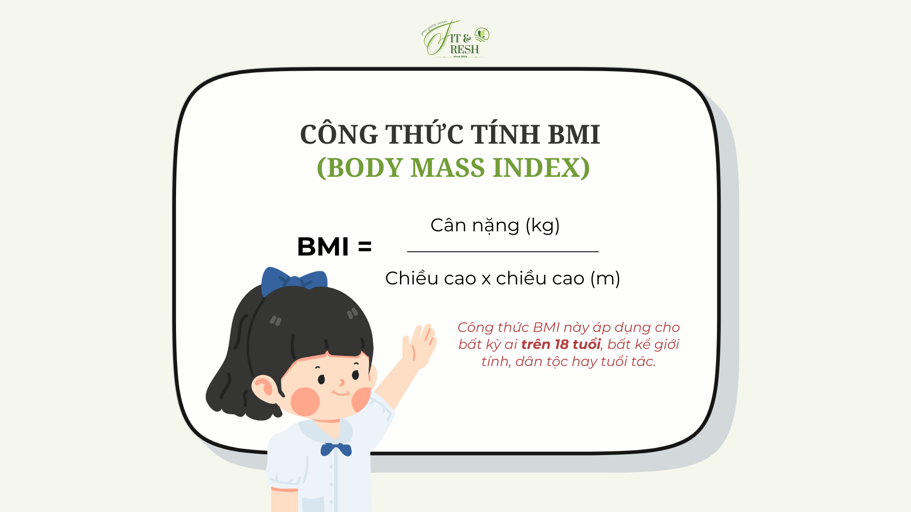

.png)
Tính BMI Online cùng FIT&FRESH
BMI là gì?
Chỉ số BMI (Body Mass Index) được tính dựa trên tỉ lệ giữa cân nặng và chiều cao bình phương, nói lên tình trạng cân nặng hiện tại của bạn. So với giá trị BMI tiêu chuẩn, chỉ số BMI cá nhân sẽ xác định một người đang thừa cân, thiếu cân hay có cân nặng cân đối.
Chỉ số BMI càng cao thì lượng mỡ trong cơ thể càng nhiều, dẫn tới nhiều nguy cơ phát sinh bệnh lý, vấn đề sức khỏe nghiêm trọng. Các bệnh thường gặp ở người cân nặng quá khổ là béo phì, huyết áp cao, bệnh tim mạch, tiểu đường,… Ngược lại nếu chỉ số BMI thấp, người bệnh cũng có nguy cơ gặp phải các vấn đề thiếu máu, miễn dịch kém hay loãng xương.
- Chỉ số BMI được tính theo công thức: 
- Chiều cao tính bằng mét
- Cân nặng tính bằng kg
CÔNG CỤ TÍNH BMI ONLINE
Cho chúng mình xin thông tin chiều cao và cân nặng để tính BMI và cân nặng lý tưởng cho bạn nhé!
Lưu ý: Công thức BMI được áp dụng cho cả nam và nữ, áp dụng cho người trưởng thành (trên 18 tuổi). Không áp dụng cho phụ nữ mang thai, vận động viên, người già và có sự thay đổi giữa các quốc gia.
KẾT QUẢ
Chỉ số BMI của bạn là:
Phân loại BMI: